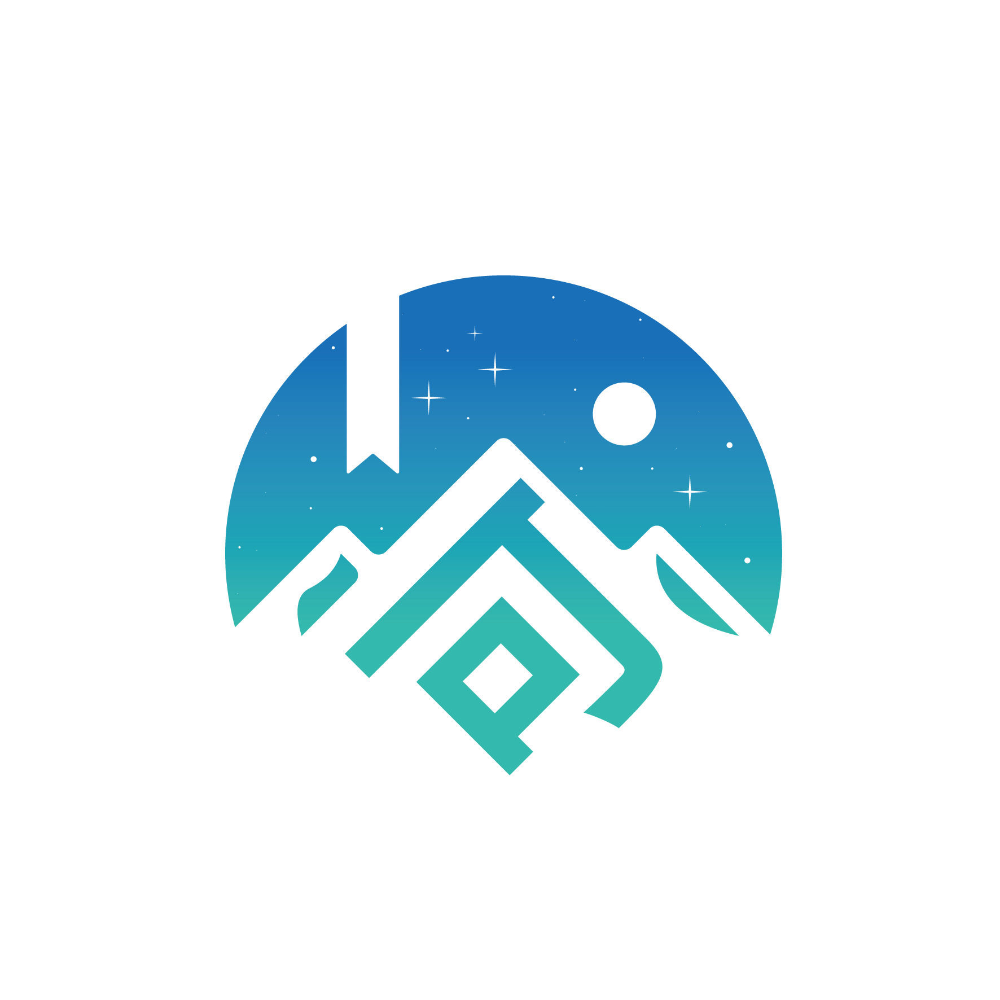
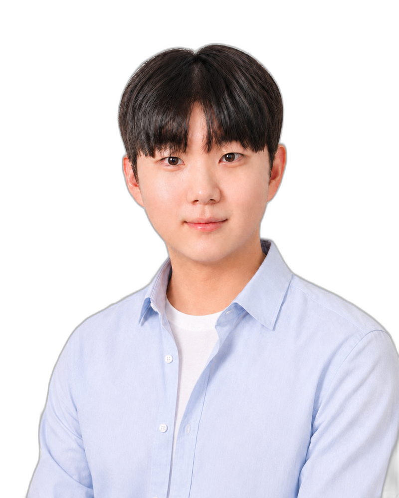
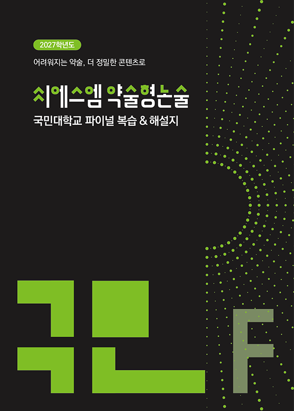
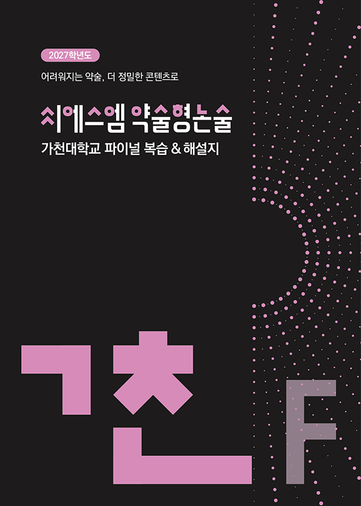

실제 국민대 국어 기출 제시문과 가경T가 출제한 CSM17 파이널 모의고사 지문 — 같은 소재·논점이 적중했습니다.
제시문 · 2026 국민대 국어 기출

지문 적중 · CSM17 파이널

실제 국민대 국어 기출 제시문과 가경T가 출제한 CSM17 파이널 모의고사 지문 — 같은 소재·논점이 적중했습니다.

[오름] 국어 학원성적이 오름, 자신감이 오름
합격까지 함께 할
꼼꼼하고 든든한 국어 강사
![가경T · [오름] 국어 원장](images/kgk-profile.png)
실제 2026학년도 국민대 국어 기출과 가경T가 출제한 파이널 1·2·3·4회를 대조해보면, 총 13건이 적중했습니다.


내신 점수 반영 0!
1개 영역 3등급 이내
2개 영역 합 6등급 이내
최저 등급 없는 대학 多
수능특강 · 수능완성이 범위
수학이 약하더라도
국어 8 · 수학 2
국어 10 · 수학 5 대학 다수
※ 2027학년도 각 대학 모집요강 기준 · 최종 확인 2026-06-10 · 지원 전 반드시 각 대학 공식 모집요강 원문을 확인하시기 바랍니다.
대학으로 가는 마지막 역전의 기회.
약술형 논술 국어의 공통 출제 기반은 EBS 수능특강·수능완성입니다. [오름] 국어 학원 강사진이 직접 출제·검수한 CSM17 약술형 논술 국어 모의고사로, 기출 코드 분석부터 실전 적중 훈련까지 한 흐름으로 이어집니다.
국민대·가천대 등 약술형 국어 기출을 제시문·발문 단위로 해부합니다.
CSM17 파이널 모의고사로 시험장 형식 그대로 시간 안에 써냅니다.

출제 · 김가경 [오름] 국어 원장
국민대 약술형 논술 국어 영역 대비 실전 모의고사입니다. 작년(2026학년도) CSM17 국민대 파이널을 김가경 원장이 직접 출제해, 실제 국민대 국어 기출에 총 13건(지문 10·문항 3) 적중시켰습니다.

출제 · 김예담 선생님 | 검수 · 김예담 · 양원철 선생님 모두 [오름] 국어 강사
가천대 약술형 논술 국어 영역의 실전 형식 그대로 구성한 모의고사입니다. 문학·독서 제시문 기반 약술 문항을 쉬운 난이도부터 실전 수준까지 단계적으로 훈련합니다.
※ 본 모의고사는 약술형 논술 전문 콘텐츠 회사인 씨에스엠(CSM17)의 모의고사 콘텐츠로, 김가경 원장과 김예담 선생님, 양원철 선생님이 출제 및 검수에 참여했습니다. [오름] 국어 학원 약술형 논술 수업에도 이 모의고사를 활용합니다.